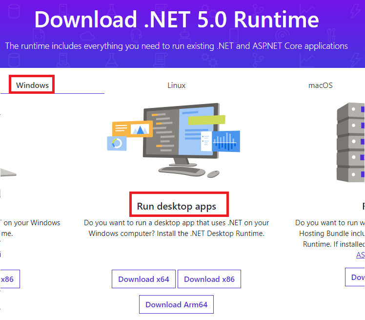
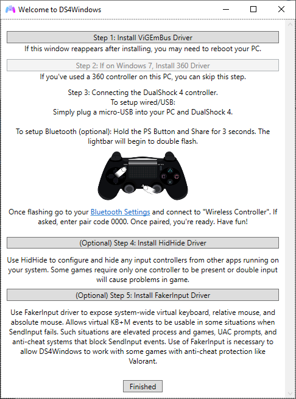
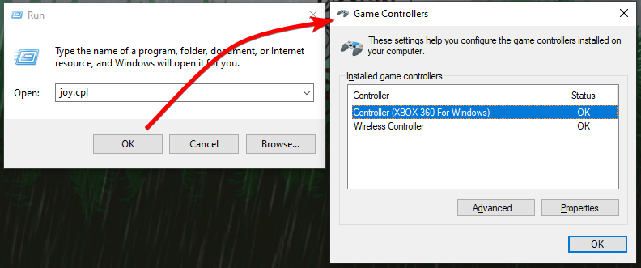

Installation and Setup
Know your system architecture
Everytime you need to choose between a x86 (32 bits) or x64 (64 bits) software/program do so accordingly to your system architecture. Keep this in mind before going forward.
Prerequisites
- Windows 10 or 11. Windows versions from 8.1 and below are NOT supported anymore and support will not be given to users running older builds
- One or more supported controllers (check the list)
- (Optional) Bluetooth dongle for connecting supported controllers wirelessly
- Download and install the .NET 5.0 Runtime FOR DESKTOP APPS accordingly to your system architecture 
Downloading and starting DS4Windows
- Download the latest DS4Windows package from here
- The .7zip package is recommended over the .zip, though you need to have 7zip installed in order to open it
- Extract the package in a easily accessible folder (e.g.: Desktop, Documents, Download etc)
- It's NOT recommended to extract it inside a folder the requires elevated privilegies (e.g.: Program Files, Windows)
- Execute the
DS4Windows.exefile to run DS4Windows - On first launch DS4Windows may ask you where to save its settings and profiles. Choose one of the 2:
- Program folder: settings/profiles are stored inside the folder where
DS4Windows.exeis located (make easy to keep track of all DS4Windows related files since they are all in one place, but also means that if you accidantly deletes the program folder you will lose everything) - AppData folder: settings/profiles are stored outside of the program folder, inside a special folder reserved to your Windows user (harder to delete your settings, but needs to remember to back up this other folder when formatting/changing computers)
- Program folder: settings/profiles are stored inside the folder where
Drivers setup
When running DS4Windows for the first time it may prompt you to install some drivers, with the first one being essential. Install them accordingly to your needs:
- (Required) ViGEmBUS: allows DS4Windows to create virtual Xbox/DS4 controllers
- (Recommended) HidHide: used to "hide" your real controller in order to prevent games from recognizing both your real controller and the virtual controller created by DS4Windows, a situation that can lead to the famous Double controller input issue
- (Optional) FakerInput: useful for users who want to use their controllers as keyboard and mouse. Though DS4Windows can do so by itself, the FakerInput has better performance and can work in more games and situations where Windows might prevent of DS4Windows' normal keyboard/mouse handler

Select the Finished button at the bottom after installing the drivers you need.
Final steps and test drive
- If your controller is not connected yet, do so now
- Check here if you are having trouble connecting them via bluetooth
- If everything is ok then your controller will appear on the main
controllerstab with theDefaultprofile selected- Check here if DS4Windows has not detected your controller
- Make sure DS4Windows is not stopped

If your controller appears on the list then Xbox Controller emulation should already be working! In order to verify:
- Press on your keyboard Win+R, type
joy.cplthen select Ok. Windows'Game Controllerswindow should appear - On the list there should be (probably) 2 controllers: your real controller and the emulated
Xbox 360 Controller

What now?
- It's strongly recommended that you read the Preventing the double-input issue section!
- It's better to not change anything in the
Output Slotstab unless you really know what you are doing. Just let everything as Dynamic as it is on default - You may want to configure your DS4Windows to start with Windows
- ...Deadzones? Profiles?
- ...Steam related info?
Preventing the double input issue
Important information!
The double-input issue is very likely to happen to you if you play modern games and it's recommended for you to understand what causes it and how to solve it. READ!
DS4Windows does not "convert" your controller from one type to another (e.g.: convert a DS4 into a Xbox controller). It creates a virtual controller that is associated to your real controller. This means that if you have 1 real controller connected then windows will detect 2 controllers. If 2 real then 4. This situation can lead to the famous double-input issue which can make some games unplayable.
To not keep repeating information all over the site just check our Solving double input issues in games guide for more info on this and on how to solve it.